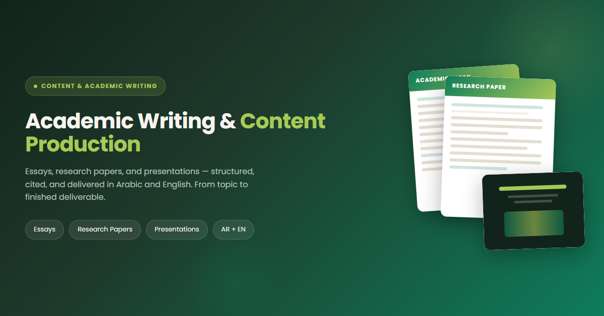

عينات المخرجات: مقال أكاديمي منظم مع الاستشهادات الصحيحة، عرض تقديمي ثنائية اللغة، وورقة بحثية منسقة — جميعها من مهمة واحدة.
اقرأ عيّنة حية
مقال أكاديمي كامل الطول — منظم، مُinky بالمرجعيات APA الإصدار السابع، ومكتوب وفقاً للمعايير المهنية. هذه هي الجودة التي ستحصل عليها.
فتح العيّنة ←ما تحصل عليه
حزمة محتوى كاملة — ليست مجرد نصوص، بل مخرجات منظمة، مُinky بالمرجعيات ومنسقة جاهزة للتقديم أو العرض أو النشر.
مقالات أكاديمية
مقالات منظمة مع مقدمة، فقرات رئيسية، خاتمة واستشهادات صحيحة — APA، MLA، Chicago أو Harvard.
أبحاث
أبحاث كاملة مع ملخص تنفيذي، منهجية، نتائج، مناقشة ومراجع موثوقة — من 2,000 إلى 10,000 كلمة.
عروض تقديمية
عروض PowerPoint / Google Slides احترافية مع ملاحظات المتحدث، تصميم متناسق ورسوم بيانية عند الحاجة.
ثنائية اللغة (عربي + إنجليزي)
محتوى كامل بالعربية أو الإنجليزية أو كليهما — مع تنسيق RTL صحيح والأعراف الأكاديمية لكل لغة.
محتوى تعليمي
مواد دورة، خطة دروس، دروس تعليمية وأدلة منظمة — مصممة للوضوح ونقل المعرفة.
جودة مضمونة
كل مخرج يُدقّق ويُنسّق ويُفحص لدقة الاستشهادات — مرتين مجانيتان مشمولتان.
سرعة في التسليم
مقالات في 1-2 يوم، أبحاث في 3-5 أيام، عروض في 1-2 يوم — المواعيد النهائية محفوظة.
صيغ متعددة
Word (.docx)، PDF، PowerPoint (.pptx) أو Google Docs — يُسلّم بالصيغة التي تحتاجها.
آلية العمل
- 1أرسل الموضوع، المتطلبات وأي مواد مصدرية.
- 2أبحث في الموضوع — مصادر حقيقية، بيانات ومراجع أكاديمية.
- 3أنشئ مخططاً تفصيلياً لموافقتك قبل الكتابة.
- 4كتابة المحتوى الكامل — منظم، مُinky بالمرجعيات ومنسق.
- 5فحص الجودة: التدقيق، التحقق من الاستشهادات والتنسيق.
- 6تتم مراجعتك وطلب التعديلات (مرتين مجانيتان مشمولتان).
- 7التسليم النهائي بالصيغة المفضلة لديك.
ما يجعل هذا مميزاً
- ✓هيكل أكاديمي حقيقي — ليست مجرد فقرات، بل صيغة بحثية مهنية.
- ✓استشهادات موثوقة — كل مرجع يُفحص للدقة.
- ✓خبرة ثنائية اللغة — العربية والإنجليزية مع أعراف أكاديمية صحيحة.
- ✓حزمة مع عرض تقديمي —احصل على نسخة PowerPoint من نفس المحتوى.
- ✓منهجية المخطط أولاً — توافق على الهيكل قبل الكتابة.
- ✓تعديلات مشمولة — جولتان مجانيتان من التعديلات بعد التسليم.
عينات المخرجات
ثلاثة أنواع من المحتوى — جميعها منتجة من مهمة واحدة بجودة متسقة وصرامة أكاديمية.
مقال أكاديمي
1,500 - 5,000 كلمة. منظم مع فكرة رئيسية، حجج داعمة، حجج مضادة وخاتمة. يُinky بأسلوب APA/MLA/Chicago/Harvard.
ورقة بحثية
2,000 - 10,000 كلمة. ورقة أكاديمية كاملة: ملخص تنفيذي، مقدمة، مراجعة أدبية، منهجية، نتائج، مناقشة، خاتمة، مراجع.
عرض تقديمي
10 - 20 شريحة. عرض PowerPoint احترافي بتصميم متناسق، ملاحظات المتحدث، رسوم بيانية عند الحاجة، وتسلسل بصري واضح.
حزمة مشتركة: مقال + عرض تقديمي
احصل على حزمة أكاديمية كاملة — مقال مُinky بالمرجعيات بالكامل مع عرض تقديمي PowerPoint مطابق. كلاهما يشترك في نفس المحتوى، الهيكل والمراجع — جاهز للتقديم والدفاع الشفهي.
السعر: 20 دولاراً (توفر 5 دولارات مقارنة بالشراء منفصل)
مدة التسليم: 3-4 أيام
أنواع المحتوى المدعومة
- ✓مقالات أكاديمية — إقناعية، توضيحية، سردية، وصفية.
- ✓أبحاث — كمية، نوعية، أساليب مختلطة.
- ✓مراجعات أدبية — منهجية، سردية، تمهيدية.
- ✓مقترحات بحثية — مع بيان المشكلة، الأهداف والمنهجية.
- ✓محتوى تعليمي — دورات، دروس تعليمية، خطط دروس.
- ✓تقارير أعمال — تحليل، توصيات، ملخصات تنفيذية.
اللغات وأساليب الاستشهاد
- ✓عربية (فصحى) — أكاديمية عربية رسمية.
- ✓إنجليزية (أمريكية/بريطانية) — أكاديمية قياسية.
- ✓ثنائية اللغة (عربي + إنجليزي) — محتوى متزامن أو مترجم.
- ✓APA الإصدار السابع.
- ✓MLA الإصدار التاسع.
- ✓Chicago / Turabian.
- ✓Harvard Referencing.
هل تحتاج محتوى مكتوب لمشروعك؟
أرسل موضوعك أو brief — ستحصل على خطة واضحة، عرض أسعار احترافي ومخرج نهائي جاهز للتقديم.